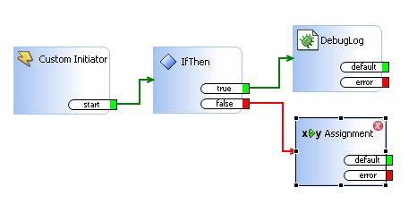
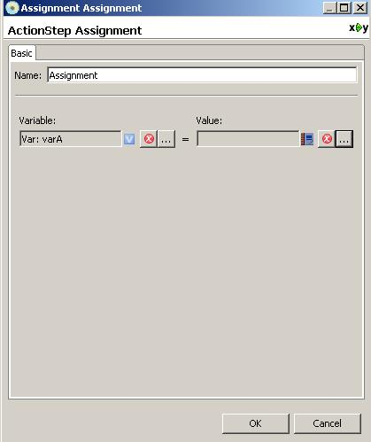
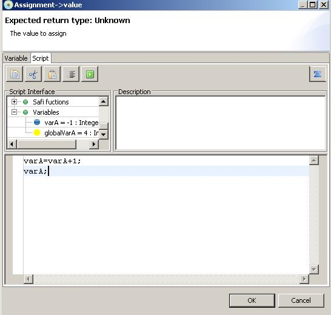
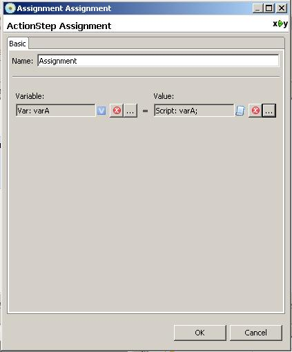
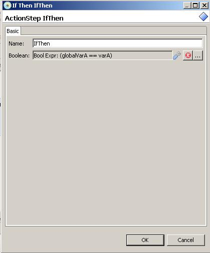

Loop Structure
Loop is structure which iterates saflet workflow path more than once.
You have to be very careful to provide loop terminating condition
correctly.
If loop terminating condition is not met, saflet can cause
stackoverflow. It will not affect server operation but your operation
might not be in the sate what you don't expect.
First create current variable varA with default value -1. then
create global variable with default value 4.
and add assignment actionstep in false path.

In assignment actionstep, we will increment varA value. Double clicking
assignment actionstep will bring up actionstep dialog.

Select script tab and write simple java script. In this javascript we
are incrementing varA value by 1 and return incremented value.

Incremented varA value is assigned to varA (This might be redundant
operation since we already assigned incremented value to varA in the
script)
Anyway varA should contain incremented value(increase by 1) after
execution of assignement step.

Let's look at loop terminating condition. We will terminate loop when
globalVarA and varA is equal.

So, according to our saflet structure, current variable varA should be
incremeneted by 1 until value of varA becomes identical with
globalVarA.
You can verify that by debugging saflet. Every assingment will
increment varA value by 1.
Once, value of varA becomes identical with that of globalVarA .
Loop takes true path and exist correctly.
Again when you build loop structure in saflet. Be very careful to
provide correct loop terminating condition.